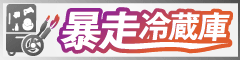

初カキコ…ども…
俺みたいな中3で冷蔵庫で冷えてる腐れ野郎、他に、いますかっていねーか、はは
今日のクラスの会話
あの流行りの曲かっこいい とか あの服ほしい とか
ま、それが普通ですわな
かたや俺は電子の冷蔵庫でイカの死体を見て、呟くんすわ
it’a rampaging fridge．狂ってる？それ、誉め言葉ね。
好きな音楽 チュンチュンワールド
尊敬する人間 アドルフ・ヒトラー（虐殺行為はNO）
なんつってる間に4時っすよ(笑) あ～あ、義務教育の辛いとこね、これ
相互リンク歓迎！こちらのバナーをご利用ください↓
